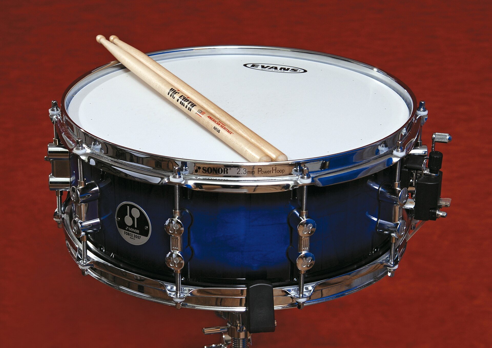

Percussion includes more than just drums. Some instruments keep the beat. Others have bars you play with mallets that can play melodies.

Photo from Instruments of the Modern Symphony Orchestra, public domain, Wikimedia Commons
Snare drum
The snare drum is a shallow drum with wires, called snares, stretched under the bottom. You play it with sticks. The snare drum is used to play different rhythms.
How it sounds
Crisp, dry, and sharp. The sound of the snare drum is very prominent. A technique called a roll can also be used to create a sustained washy sound that adds texture to the band.
Cymbals are round metal plates. In band you will see two kinds. Crash cymbals are a pair you hold and clap together. A suspended cymbal is one cymbal hanging on a stand, played with mallets or sticks. Players roll on it so the sound grows, or strike it once and let it ring.
How it sounds
Very metallic. A pair crashed together creates a bright splash. A single cymbal played with sticks creates a bright ping, while rolling on a cymbal using mallets can create a sound that grows, creating suspensful moments in music.
The marimba is a large instrument with wooden bars on top and tubes called resonators hanging underneath. You play it using mallets. The Marimba can play different notes, and those notes are layed out in the same way the notes of a piano are.
How it sounds
Warm, round, and woody. The Marimba often plays along with the woodwinds to add a slight punch to the notes they are playing.
The xylophone is a smaller version of the Marimba. The bars being played on are also made of wood. Players usually use harder mallets, and the notes don't ring as long as a marimba.
How it sounds
Bright, dry, and percussive, the xylophone plays notes that sound higher than the marimba.
The vibraphone has metal bars, tubes underneath, and a motor. The motor spins small fans to make the notes sound wavy. The Vibraphone also has a foot pedal used to keep the notes ringing for a long time, simmilar to the foot pedal on a piano.
How it sounds
Metallic but smooth. The vibraphone adds color to the band and can be used to make music sound mysterious and dreamy.
The concert bass drum is a very large drum played with a soft fuzzy mallet.
How it sounds
Deep and boomy, the sound of a bass drum fills the room and adds weight to the music. It plays a simmilar role to the tuba in filling up the sound of the band, it is often used to keep a steady beat for the band to follow as well.
The Timpani is a large bowl shaped drum. A player usually has two to four of them, each tuned to a different note. A foot pedal changes the pitch. You play a Timpani using felt mallets..
How it sounds
Deep, round with simmilar boomy sound to the bass drum. The tuned notes are used to accent specific moments in the music. It is also common to hear the timpani roll in a simmilar way a snare drum would do.